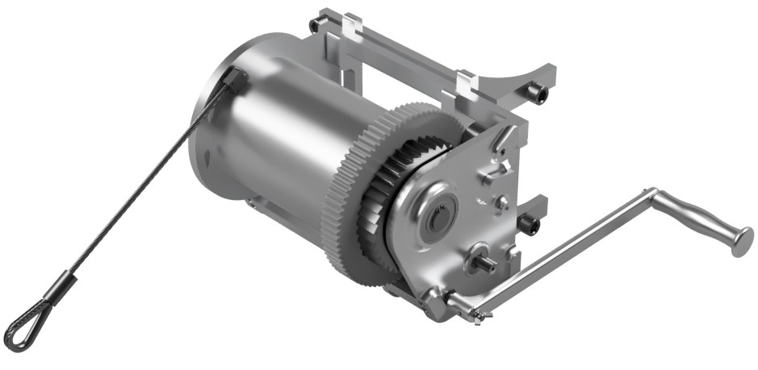

Forest winch
A hand-cranked winch for dragging logs out of the forest: one person turns a crank and the cable pulls up to 3.5 kN.
- Course
- Mechanical Construction II
- School
- EPFL, bachelor's in microengineering
- Team
- 4 students
- Grade
- 6 / 6
- Reduction
- 15:1

Starting from measurements
To know what a person can give, we turned a bike with a power meter by hand: about 55 W, so 44 N on the handle. We also dragged a log on the ground to measure its friction (1.19 static, 0.98 moving). With a margin on friction, the worst slope needs 3537 N on the cable, and a pull on flat ground about 2000 N.
The transmission
Two gear pairs, 1:3 then 1:5, give a 15:1 reduction between the 250 mm crank and the drum. On average that is 2.4 kN at 2 cm/s, so about 16 minutes to wind the 20 m of cable. For lighter logs, the crank can go on the intermediate shaft (5:1), which is three times faster. A ratchet on the drum holds the load if the user lets go, and a small handle lifts the pawl to release it. The overall efficiency is about 90 %.
Checking every part
Every part was checked against the 3537 N peak: shafts in torsion and shear, keys, gear teeth, bearings, the drum and cable screws, the ratchet, the hooks that hold the winch on its support, and the straps. The cable is 6 mm with a breaking load of 19.6 kN, a safety factor of 5.